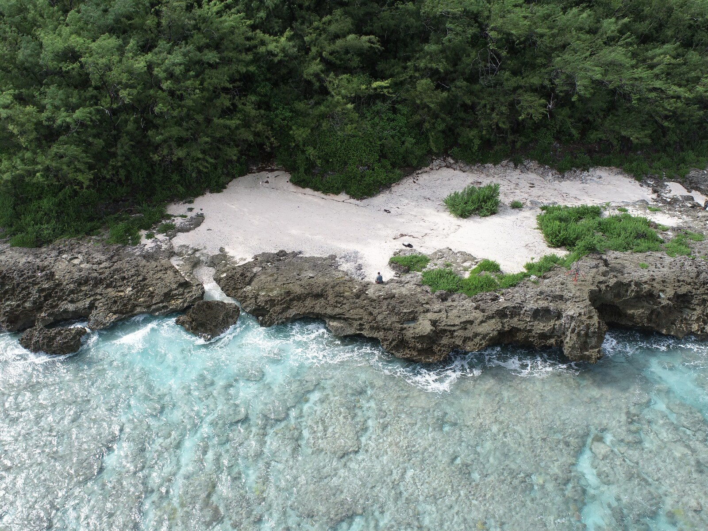
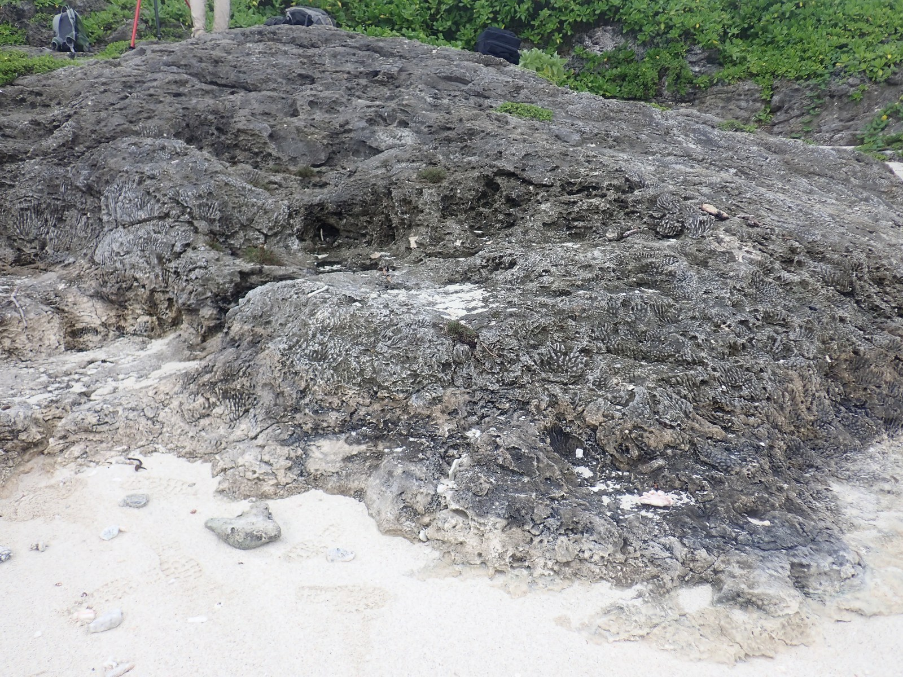

Reading sea level
in raised reefs.
Cook Islands · May–June 2026
A fossil reef is a record of life, water depth and a changing landscape. Understanding its history takes us from the outcrop to the lab and into models of the Earth.
Our Southern Cook Islands fieldwork is part of HISEAS, a collaboration investigating ice-sheet change during the Last Interglacial. The campaign connects Rarotonga, Atiu, Mangaia, Mauke and Mitiaro.
Explore the field atlas

From coral framework
to a testable history.
Reef height alone cannot tell us how much ice melted. We need to understand where corals grew, when they lived, how well they are preserved and how the land has moved.
- Read the rock
- Field descriptions and photographs distinguish coral framework, sediment, rubble and later alteration.
- Connect age and elevation
- Sample screening and U-series dating can establish ages; GPS surveys and tide-gauge records connect observations to local height references.
- Test the explanation
- Geodynamic and sea-level models help separate land motion from the sea-level changes associated with past ice sheets.
Follow the field evidence.
The Cook Islands atlas holds the evolving record: site observations, photographs, survey context and the initial report for island communities and project partners.
Initial field record; interpretation in progress. Dating, preservation screening and land-motion corrections remain part of the research. The field observations do not yet establish a final sea-level history.